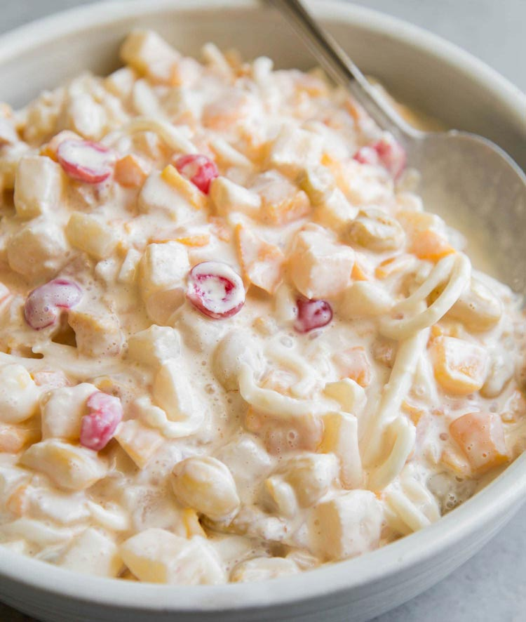

Filipino Fruit Salad
My NUMBER ONE favorite dessert of ALL TIME! I grew up eating this at family parties, and I knew I had to learn to make it myself. It’s very easy to make and always hits the spot!

Image by: Maryanne Cabrera
Ingredients:
- 2 large cans of fruit cocktail
- 1 can of mangoes
- 1 can of sliced/diced pineapples
- 1 can mandarin oranges
- 1 small-medium jar of maraschino cherries
- Sweetened condensed milk
- 1 can (7.5 oz) table cream
- Optional:
- Lychee
- Coconut jelly
- Diced apples
Directions:
- Place a large strainer in a large mixing bowl, and pour all of your canned fruits inside. Drain the juices for at least 10 minutes.
- Pour out the juices (or save them for something else!) and put the fruit back in the mixing bowl.
- Add in the table cream.
- Slowly mix in the condensed milk and table cream, tasting repeatedly. This makes the salad very sweet very fast, so only add as much as you like! I prefer about half of a 14oz can.
- Cover the mixing bowl with plastic wrap, and refrigerate for at least an hour before eating. Keep it stored in the fridge.
- Enjoy!
Table of Contents
Recipes